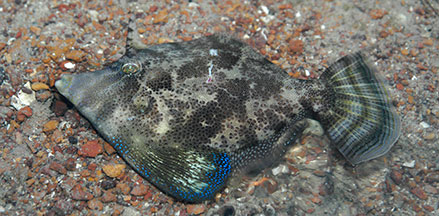
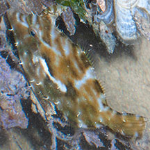
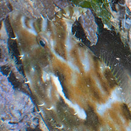
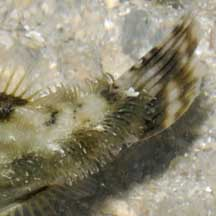
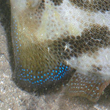
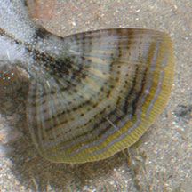
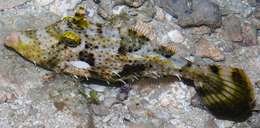
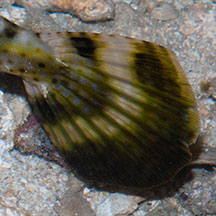

|
|
| fishes text index | photo index |
| Phylum Chordata > Subphylum Vertebrate > fishes |
| Filefishes or Leatherjackets Family Monacanthidae updated Sep 2020
Where seen? These strange-looking fishes are quite commonly seen on many of our shores, especially in areas with seagrasses and among coral rubble. They can be quite large but are hard to spot as they blend in well with their surroundings. Some tiny filefishes are hardly bigger than a seagrass leaf and are often the same colour as the seagrasses! So do watch your step to avoid squashing these small fishes. What are filefishes? Filefishes belong to Family Monacanthidae. According to FishBase: the family has 31 genera and 95 species. They are found in the Atlantic, Indian and Pacific Oceans. They range from small fishes about 2cm long to giants 1m long! Features: Adults 10-30cm. Body flattened sideways and disc-shaped to rectangular. Eyes are high on the head. The gill openings are just slits. Usually two dorsal spines, the second may be much smaller or absent. The dorsal spine is usually long stiff with downward pointing barbs on the edges. This feature gives it its scientific name: 'mono' means 'one' and 'canthus' means 'thorn'. The dorsal spine can be locked upright to wedge in crevices, safe from predators and from being swept away by currents. When not in use, the spine is folded away into a groove on the body. Most have a second dorsal spine but this is usually small. The pelvic fin is bony and fused with the body forming a flap under the body. The scales are small and have prickles on them. So the skin feels leathery and rough, like sandpaper. These fishes are sometimes also called leatherjackets. Some have hairy or feathery bits sticking out of their skin that help break up their body outline. Filefishes can't swim fast, aside from a short burst of speed to escape predators by using their tails. Otherwise, they swim slowly by undulating their other fins. Most rely on camouflage to avoid predators. They can rapidly change colours and patterns to match their surroundings. The flattened body allows them to slip quietly among seagrass or squeeze into crevices. These fishes often flatten out against or 'wrap around' sponges, rubble and other large objects. They are then really hard to spot. |
 The 'thorn' at the top of the head can be locked into place. There is usually a flap under the body. Beting Bronok, Mar 07 |
 Wrapped closely around a sponge. Chek Jawa, May 04 |
| What do they eat? Filefishes will eat almost any food source. These include small bottom-dwelling animals like small prawns. They also nibble on seaweed, seagrass, the epiphytes growing on them. Also immobile animals like bryozoans and ascidians, as well as coral polyps. They will also eat the flesh of other marine animals. The small mouth at the end of a pointed snout allows them to suck small prey out of their hiding places, or reach into crevices to nibble on edible bits. Some have large prominent teeth. |
 They can change colours for perfect camouflage! Chek Jawa, May 05 |
 Tiny green one resembles a seagrass leaf! Changi, May 11 |
 Three Feathery fishes resembling flotsam. Tanah Merah, Sep 11 |
| Filefish babies: Many filefishes
lay eggs that settle on the bottom, onto a site prepared and guarded
by the male or both parents. Some subtropical species may release
their eggs into open waters. Human uses: Filefishes are edible and eaten in some traditional dishes. Unlike most other edible fishes which are scaled before we eat them, for filefishes, the rough skin has to be 'peeled' off first. Status and threats: None of our filefishes are listed among the threatened animals of Singapore. However, like other creatures of the intertidal zone, they are affected by human activities such as reclamation and pollution. Over-fishing can also have an impact on local populations. |
| Filefishes on Singapore shores |

|
 |
 |
 |
| An irregular curved yellow or white line along the front of the body from the gill opening to the middle of the upper body, that resembles a 'smile'. Body in a wide variety of colours and patterns, usually irregular blotches. | Tail fin small. Adult males have bristles near the tail fin arranged a well-defined central oblong patch. |
 |
 |
 |
| Large triangular skin flap on the belly that can be greatly expanded, but often tucked close to the body. Body with lots of small circular dots and broad diagonal bars on the sides, in some these bars may be indistinct. It comes in all shades from brown to green. | Tail fin large. On a large adult, the upper fin rays on the tail is produced into a filament. |
|
 |
 |
|
| Body with lots of small circular dots and often a broad white stripe along the centre of the body from the gill opening. May have dark blotches. | Tail fin very large. | |
| Family
Monacanthidae recorded for Singapore from Wee Y.C. and Peter K. L. Ng. 1994. A First Look at Biodiversity in Singapore. *Lim, Kelvin K. P. & Jeffrey K. Y. Low, 1998. A Guide to the Common Marine Fishes of Singapore. **from WORMS +Other additions (Singapore BIodiversity Records, etc)
|
Links
References
|